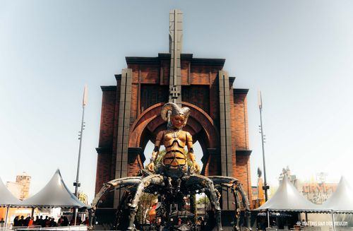

Festivals · Music
Hellfest 2027
- Dates
- –
- Location
- Clisson, France
- Format
- In-person
- Category
- Music
- Industry
- Music
- Organiser
- Hellfest
- Official website
- https://hellfest.fr/en
- Tickets
- https://tickets.hellfest.fr/en/
About
Official site/ticket shop: 17–20 June 2027. Ticket shop pages described the edition as sold out when fetched; no current public price was stored. Dates are local to the host city (Central European Time, UTC+1 / UTC+2 in summer).
Topics: metal, hard rock.
Official Hellfest English homepage (fetched 24 Nov 2026) states “240.000 Hellbangers” alongside “17 - 20 june 2027, Clisson Rock City.” Stored as 240,000.